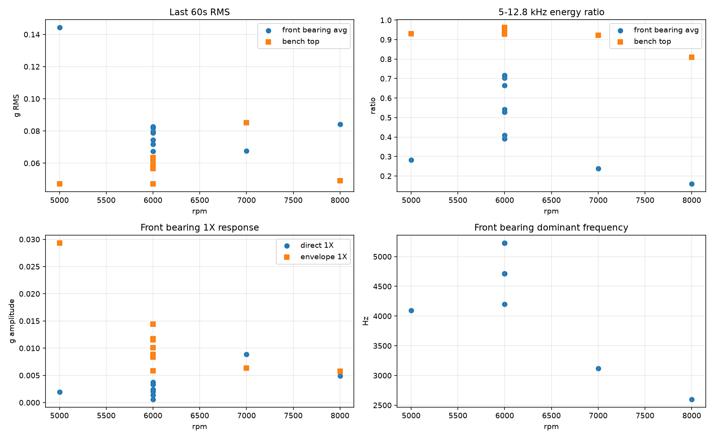
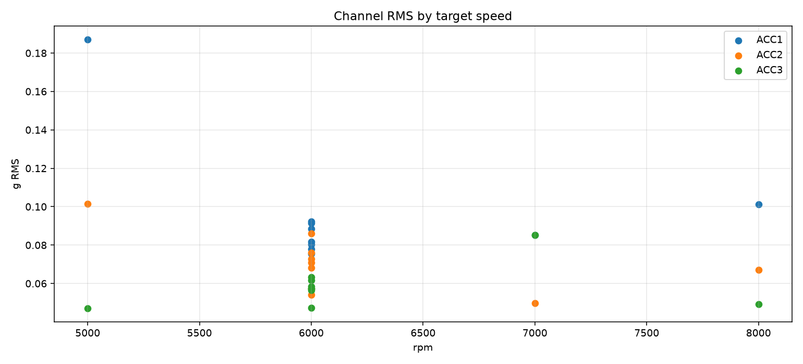
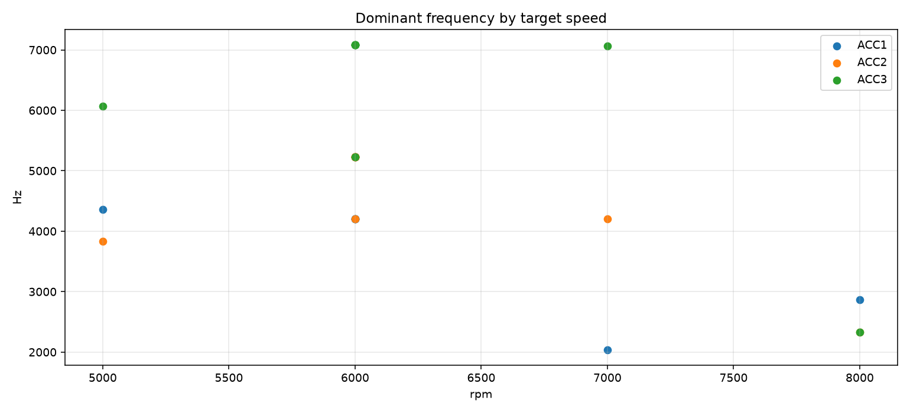

不同转速稳态最后 1 分钟振动信号分析报告
1. 样本与方法
本次纳入 10 个具有单一 target_speed_rpm 的稳态 run：
5000 rpm 1 组，6000 rpm 7 组，7000 rpm 1 组，8000 rpm 1 组。
run_20260707_185308 与 run_20260707_185820
因 manifest 中没有单一目标转速，未纳入本次跨转速稳态比较。
每个 run 使用 spindle_telemetry.csv 中目标转速保持块的最后 60 s，
再读取对应的 acceleration_25600Hz_256000samples/*.npz.xz 原始振动段。
每个通道实际分析样本数为 1,536,000 点，即 60 s × 25,600 Hz。
| 通道 | 传感器 | 位置 | 方向 | 安装 |
|---|---|---|---|---|
| ai0 | ACC1 | FrontBearingOuter | Y | Magnet |
| ai1 | ACC2 | FrontBearingOuter | X | Magnet |
| ai2 | ACC3 | BenchTop | Y | Magnet |
2. 转速稳定性
所有纳入窗口的实际转速都稳定在目标值附近，实际转速标准差约 0.40-0.68 rpm。 因此，不同振动响应的差异不太可能来自转速控制失稳。
| 目标转速 | 样本数 | 实际转速均值 | 实际转速标准差 | 说明 |
|---|---|---|---|---|
| 5000 rpm | 1 | 4999.998 rpm | 0.412 rpm | 速度稳定，但 speed_ok 比例较低，后续宜复核判据阈值 |
| 6000 rpm | 7 | 约 5999.93-6000.03 rpm | 平均 0.456 rpm | 重复 run 稳定，可用于观察重复性 |
| 7000 rpm | 1 | 7000.005 rpm | 0.602 rpm | 速度稳定 |
| 8000 rpm | 1 | 7999.979 rpm | 0.677 rpm | 速度稳定 |
3. 转速与振动幅值的关系
前轴承两路平均 RMS 不随转速单调增加：5000 rpm 最高，6000 rpm 明显降低， 7000 rpm 继续降低，8000 rpm 又有所回升。若响应主要由简单转速激励控制， 通常会看到更清晰的随转速上升趋势或稳定阶次规律；当前数据不支持这个简单模型。
| 目标转速 | run 数 | 前轴承 RMS 均值 | 台面 RMS 均值 | 前轴承 5-12.8 kHz 能量占比 | 前轴承 1X 直接谱幅值 | 前轴承 1X 包络幅值 | 前轴承主频均值 |
|---|---|---|---|---|---|---|---|
| 5000 rpm | 1 | 0.144249 g | 0.047080 g | 0.283422 | 0.001976 g | 0.029333 g | 4095.35 Hz |
| 6000 rpm | 7 | 0.076657 g | 0.057419 g | 0.565431 | 0.002265 g | 0.010126 g | 4862.72 Hz |
| 7000 rpm | 1 | 0.067528 g | 0.085176 g | 0.238960 | 0.008884 g | 0.006311 g | 3118.88 Hz |
| 8000 rpm | 1 | 0.084075 g | 0.049143 g | 0.159225 | 0.004907 g | 0.005767 g | 2599.06 Hz |
以目标转速均值聚合后，前轴承 RMS 与转速相关系数约 -0.705； 前轴承 1X 直接谱幅值与转速相关系数约 0.621； 前轴承 1X 包络幅值与转速相关系数约 -0.864。 由于 5000/7000/8000 rpm 各只有 1 个 run，相关系数只能作为趋势描述，不能作为统计显著性结论。

4. 频率证据：主导响应不像纯阶次响应
如果响应主要由固定转速阶次激励控制，主峰应以相近阶次随转速移动。 但本次数据中主峰阶次在不同转速和通道间跳变明显： 6000 rpm 下 ACC3 多数 run 以约 7080 Hz 为主，对应约 70.8X； ACC1/ACC2 经常在约 4203 Hz 和 5229 Hz 之间切换，对应约 42.0X 和 52.3X。 7000 rpm 与 8000 rpm 又出现约 2038 Hz、2329 Hz、2869 Hz、4200 Hz 等主峰。 这些峰更像结构/安装/支撑传递路径中的模态被不同激励成分选择性激发。
| 转速 | ACC1 主峰 | ACC2 主峰 | ACC3 主峰 | 解读 |
|---|---|---|---|---|
| 5000 rpm | 4357.4 Hz / 52.3X | 3833.3 Hz / 46.0X | 6067.0 Hz / 72.8X | 前轴承 Y 向 RMS 最高，包络 1X 也最高，疑似某一结构响应被激发 |
| 6000 rpm | 4203 或 5229 Hz | 多为 5229 Hz，部分 4203 Hz | 多为 7080 Hz，部分 5229 Hz | 同一转速重复 run 中主峰会切换，说明边界/安装/热状态/负载对频谱很敏感 |
| 7000 rpm | 2037.8 Hz / 17.5X | 4200.0 Hz / 36.0X | 7064.4 Hz / 60.6X | 台面 RMS 和 1X 响应增强，但前轴承 RMS 不高 |
| 8000 rpm | 2869.0 Hz / 21.5X | 2329.1 Hz / 17.5X | 2329.1 Hz / 17.5X | 前轴承 RMS 回升，但高频占比下降，主峰转向较低频结构峰 |


5. 判断：转速激励存在，但结构响应占主导
- 支持“转速激励存在”的证据： 1X 直接谱和 1X 包络谱都有可测幅值；7000/8000 rpm 的直接 1X 幅值相对更高； 6000 rpm 单段报告中包络谱也能看到 100 Hz、200 Hz、300 Hz 等转频相关调制。
- 反对“纯转速激励主导”的证据： RMS 不随转速单调增加；主峰不按固定阶次移动； 同一 6000 rpm 重复 run 的主峰可在 4203、5229、7080 Hz 间切换。
- 支持“结构/安装/传递路径主导”的证据： 高频能量占比很高，尤其 ACC3 台面通道在 5000/6000/7000/8000 rpm 分别约 0.931、0.944、0.923、0.810；这说明台面或支撑路径对高频很敏感。 前轴承通道的高频占比和主峰位置也随 run 条件变化，符合边界条件影响模态响应的特征。
6. 建议
- 做 4500-8500 rpm 的细步长扫频，例如每 250 rpm 或 500 rpm 保持 60-120 s，观察主峰频率是固定不动还是随阶次移动。
- 加入转速相位信号或至少更高可信度的转速同步记录，做真正的 order tracking。
- 重装 ACC1/ACC2/ACC3，特别是磁吸安装面，检查 4203、5229、7080 Hz 峰是否随安装变化。
- 单独敲击或轻扫结构，测台面、轴承座、支撑件的固有频率，重点核对 2.3 kHz、4.2 kHz、5.23 kHz、7.08 kHz 附近。
- 5000 rpm 前轴承 Y 向 RMS 明显偏高，应复测一次，确认是否稳定复现；若复现，优先排查该速度附近的结构共振或安装边界变化。
7. 结果文件
speed_vibration_run_summary.csv：run 级最后 60 s 汇总。speed_vibration_channel_features.csv：通道级 RMS、峰值、频谱、包络、频带占比。speed_vibration_by_target_speed.csv：按目标转速聚合后的指标。speed_vibration_analysis.json：完整结构化结果。